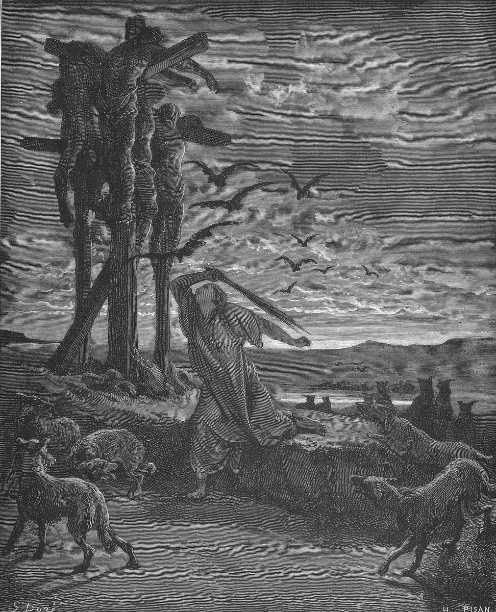

2 Samuel 21 — The Mister Translation

2 Samuel 21:10. The title is the one Commons gives the plate. Doré shows Rizpah keeping off the birds of the heavens by day and the beasts of the field by night in one picture, as the verse says she did; the stick in her hand is his, and the Hebrew does not mention one. He draws three posts with the bodies, where the text has seven men hanged on the mountain (verse 9), and he has her standing against the animals rather than spreading sackcloth on the rock; the sackcloth is not in the picture.

Translator's Notes — verse by verse
Sought the face. “And there was a famine in the days of David, three years, year after year; and David sought the face of Jehovah”: “and David sought” stands in two verses, this one and 2 Samuel 12:16, where he sought God for the boy (now on these pages). The ASV has “sought the face of Jehovah”. The NWT 1984 has “consult the face of Jehovah”. The TLB has “spent much time in prayer about it”. The Douay has “consulted the oracle of the Lord”. Rahlfs’ Greek has ezētēsen Dauid to prosōpon tou kyriou, “David sought the face of the Lord”. The verse does not say in which year of his reign the famine fell, and it does not say what David did in the first two of the three years.
The house of bloodshed. “It is on Saul, and on the house of bloodshed, because he put the Gibeonites to death”: the Hebrew is beit hadamim, “the house of the bloods”, with blood in the plural that means blood shed (see damim). The ASV has “for his bloody house”. The NIV has “his blood-stained house”. The NWT 1984 has “there is bloodguilt”. The TLB has “the guilt of Saul and his family”. The Douay has “his bloody house”. Rahlfs’ Greek has adikia, “injustice”. The plural is Shimei’s word: he called David “man of bloods” and said Jehovah had “turned back upon you all the bloods of the house of Saul” (2 Samuel 16:7–8, now on these pages). Here the oracle puts the bloods on Saul’s house. No earlier chapter on these pages tells of Saul’s killing of the Gibeonites; it is reported here, in this answer, and in the next verse.
The Gibeonites. “Now the Gibeonites were not of the sons of Israel, but of the remnant of the Amorites; and the sons of Israel had sworn to them”: “they had sworn to them” stands in two verses, here and Joshua 9:18, where the chieftains of the congregation swore to them and the sons of Israel “did not strike them” (now on these pages). The ASV has “of the remnant of the Amorites”. The NIV has “survivors of the Amorites”. The NWT 1984 has “not of the sons of Israel, but of the remainder”. The TLB has “what was left of the nation of the Amorites”. Joshua 9:7 called them Hivites; the page does not reconcile the two names.
Saul’s zeal. “And Saul sought to strike them down in his zeal for the sons of Israel and Judah”: the verb is hakkot, “to strike”, the verb Joshua 9:18 used when the sons of Israel did not do it, and the noun is qin’ah, “zeal”. The ASV has “in his zeal for the children of Israel and Judah”. The NIV has “in his zeal for Israel and Judah”. The NWT 1984 has “feeling jealous for the sons of Israel and Judah”. The Hebrew sentence does not end: it is a remark set in the middle of what the king said to the Gibeonites, and verse 3 begins again, “and David said to the Gibeonites”. The text gives no date for Saul’s deed and no number for the dead.
Atonement. “What shall I do for you? And with what shall I make atonement, that you may bless the inheritance of Jehovah?”: the verb is akhapper, “I will atone”. The ASV has “wherewith shall I make atonement”. The NIV has “How shall I make atonement”. The NWT 1984 has “with what shall I make atonement”. The TLB has “to rid ourselves of this guilt”. The Douay has “what shall be the atonement for you”. “The inheritance of Jehovah” stands in four verses: David’s complaint that he is driven from it (1 Samuel 26:19), the wise woman’s question to Joab (2 Samuel 20:19, both now on these pages), this one, and Psalm 127:3. Here it is the land, and the people of it, whom the Gibeonites, who are not of Israel, are asked to bless (see nachalah).
No silver or gold. “We have no silver or gold with Saul and with his house; and we have no man to put to death in Israel”: at this word the text is written one way and read another, written ein-li, “I have none”, and read ein-lanu, “we have none”. The ASV has “It is no matter of silver or gold between us and Saul”. The NIV has “We have no right to demand silver or gold from Saul or his family”. The NWT 1984 has “It is not a matter of silver or gold for us”. The TLB has “money won’t do it”. The Douay has “We have no contest about silver and gold”. Numbers 35 forbids a ransom for the life of a killer and says that for the land “no atonement can be made for the blood that is shed in it, except by the blood of the one who shed it” (Numbers 35:31, 33, now on these pages); and Deuteronomy says “Fathers shall not be put to death for sons, and sons shall not be put to death for fathers” (Deuteronomy 24:16, now on these pages). The Gibeonites cite neither, and the chapter cites neither.
Seven men of his sons. “The man who consumed us, and who planned against us — we have been destroyed from standing in any border of Israel — let seven men of his sons be given to us”: the sentence is broken off in verse 5 and taken up in verse 6, and the word “let be given” is written yinnaten and read yuttan. The ASV has “The man that consumed us, and that devised against us”. The NIV has “the man who destroyed us and plotted against us”. The NWT 1984 has “The man that exterminated us and that schemed to annihilate us”. The Douay has “we must destroy in such manner that there be not so much as one left of his stock”, which asks for more than the Hebrew does. The number is seven, and the Gibeonites ask for sons, mibbanav, “from among his sons”.
Hang them up. “And we will hang them up to Jehovah in Gibeah of Saul, the chosen of Jehovah”: the verb is vehoqa’anum (see hoqa), the verb Jehovah used in Numbers 25:4. The ASV has “we will hang them up unto Jehovah in Gibeah of Saul, the chosen of Jehovah”. The NIV has “their bodies exposed before the Lord at Gibeah of Saul”. The NWT 1984 has “we must expose them to Jehovah”. The TLB has “We will hang them before the Lord in Gibeon”. The Douay has “that we may crucify them to the Lord in Gabaa of Saul”. Rahlfs’ Greek has exēliasōmen, “we will expose to the sun”, and en Gabaōn Saoul, “in Gibeon of Saul”, a city, Gibeon, and not Saul’s Gibeah. “The chosen of Jehovah” is said of Saul by the men whose people he tried to strike down; Samuel had said “him whom Jehovah has chosen” (1 Samuel 10:24, now on these pages).
Spared. “And the king spared Mephibosheth son of Jonathan son of Saul, because of the oath of Jehovah that was between them, between David and Jonathan son of Saul”: vayyachmol (see chamal), the verb of the spared Agag (1 Samuel 15:9, now on these pages). The ASV has “the king spared Mephibosheth”. The NIV has “The king spared Mephibosheth”. The NWT 1984 has “the king felt compassion”. The TLB has “He spared Jonathan’s son Mephibosheth”. The Geneva has “the king had compassion on Mephibosheth”. The oath is the one the two men swore “in the name of Jehovah” (1 Samuel 20:42), with the “kindness of Jehovah” Jonathan had asked (20:14), and David’s own oath to Saul about his offspring (1 Samuel 24:22, all now on these pages); the first kindness David did for Jonathan’s sake is in 2 Samuel 9:1, 7.
Two of the same name. “Armoni and Mephibosheth”: the grandson of verse 7 and Rizpah’s son of verse 8 have one name, and the Hebrew spells them apart, the first with a yod, Mefiyvoshet, the second without it, Mefivoshet. Rizpah is “the daughter of Aiah” in verses 8, 10 and 11, and the words “Rizpah daughter of Aiah” stand in four verses, these three and 2 Samuel 3:7, where Ish-bosheth charges Abner with going in to her (now on these pages). Both of her sons were born to Saul; the king takes two of Saul’s sons, and then five more.
Michal, or Merab. “And the five sons of Michal daughter of Saul, whom she bore to Adriel son of Barzillai the Meholathite”: the Hebrew and Rahlfs’ Greek both read Michal. Saul gave Merab to Adriel the Meholathite (1 Samuel 18:19), gave Michal to Palti (1 Samuel 25:44), and Michal “had no child to the day of her death” (2 Samuel 6:23, all now on these pages). The ASV has “whom she bare to Adriel”. The NIV has “the five sons of Saul’s daughter Merab”. The TLB has “the five adopted sons of Michal that she brought up for Saul’s daughter Merab”. The KJV has “whom she brought up for Adriel”. The Douay has “whom she bore to Hadriel”. Some manuscripts are reported to read Merab; that is not checked here. Barzillai the Meholathite is not Barzillai the Gileadite of Rogelim (2 Samuel 19:32).
Hanged on the mountain. “And he gave them into the hand of the Gibeonites, and they hanged them on the mountain before Jehovah; and the seven of them fell together”: the verb is vayyaqi’um, of the same root as vehoqa’anum in verse 6. The ASV has “they hanged them in the mountain before Jehovah”. The KJV has “they hanged them in the hill”. The NIV has “exposed their bodies on a hill”. The NWT 1984 has “expose them on the mountain”. The TLB has “The men of Gibeon impaled them in the mountain”. The Douay has “they crucified them on a hill”. Rahlfs’ Greek has exēliasan, “exposed them to the sun”. At the end of the verse the text is written one way and read another in three places: shiv’attayim for shiv’atam, “the seven of them”, vehem for vehemmah, and techillat for bitchillat, “at the beginning of”. The day is the first of the barley harvest.
Sackcloth on the rock. “And Rizpah daughter of Aiah took the sackcloth, and spread it for herself on the rock”: she does not wear it; she lays it out. The ASV has “spread it for her upon the rock”. The NIV has “spread it out for herself on a rock”. The NWT 1984 has “spread it for herself upon the rock”. The TLB has “spread sackcloth upon a rock”. The Geneva has “hanged it up for her upon the rock”. The Douay has “spread it under her upon the rock”. Rahlfs’ Greek has epēxen, “fixed, pitched”, the verb for a tent. The text does not say which rock, nor where.
Until water. “From the beginning of harvest until water was poured on them from the heavens”: nittak mayim. The ASV has “until water was poured upon them from heaven”. The NIV has “till the rain poured down from the heavens”. The NWT 1984 has “until water poured down upon them from the heavens”. The TLB has “through the entire harvest season”. The KJV has “until water dropped upon them out of heaven”. The two ends are given, the first days of the barley harvest (verse 9) and water from the sky, and the verse names no number of days.
The birds and the beasts. “And she did not let the bird of the heavens rest on them by day, nor the beast of the field by night”: the curse of the covenant is a carcass that is “food for every bird of the heavens and for the beasts of the earth” (Deuteronomy 28:26), and Goliath’s threat to David was the flesh “to the birds of the heavens and to the beasts of the field” (1 Samuel 17:44, both now on these pages). The ASV has “nor the beasts of the field by night”. The NIV has “she did not let the birds touch them by day or the wild animals by night”. The NWT 1984 has “nor the wild beasts of the field by night”. The TLB has “to prevent the vultures from tearing at their bodies”. What the covenant says will be left undone, she does, by day and by night. Deuteronomy 21:23 says a body hanged on a tree is not to stay the night (now on these pages); the chapter does not mention it.
It was told David. “And it was told David what Rizpah daughter of Aiah, the concubine of Saul, had done”: the Hebrew gives her no words, and gives the king no answer in this verse; what he does is in verse 12. The ASV has “the concubine of Saul”. The NIV has “Saul’s concubine”. The TLB has “the mother of two of the men”. She is pilegesh Sha’ul, “concubine of Saul”, as in 3:7 (see pilegesh); the verse does not name the mother of the other five.
Stolen. “And David went, and took the bones of Saul and the bones of Jonathan his son from the citizens of Jabesh-gilead, who had stolen them from the broad place of Beth-shan, where the Philistines had hanged them”: the owners of Jabesh are baale Yavesh (see baal). The ASV has “the men of Jabesh-gilead, who had stolen them from the street of Beth-shan”. The NIV has “from the citizens of Jabesh Gilead”. The NWT 1984 has “the landowners”. The NIV has “the public square at Beth Shan”. “The broad place of Beth-shan” stands only here; 1 Samuel 31:10 says the body was “fastened to the wall of Beth-shan”, and 31:13 that the men of Jabesh buried the bones under the tamarisk (now on these pages). The verb is ganav, “stole” (see ganav), the verb of Absalom’s stolen hearts (2 Samuel 15:6) and of the army’s stealing into the city (19:4, now on these pages).
The hanged. “And they gathered the bones of those who had been hanged”: hammuqa’im, a participle of the root of verses 6 and 9, which makes the seven and the two one company. The ASV has “the bones of them that were hanged”. The NIV has “the bones of those who had been killed and exposed”. The NWT 1984 has “the bones of the men being exposed”. The Douay has “the bones of them that were crucified”. The verse does not say who gathered them. David had blessed Jabesh for burying Saul (2 Samuel 2:5–6, now on these pages), and he now takes what Jabesh kept.
Zela. “And they buried the bones of Saul and Jonathan his son in the land of Benjamin, in Zela, in the grave of Kish his father; and they did all that the king commanded”: Zela is in Benjamin’s list (Joshua 18:28, now on these pages), and the name is the Hebrew tsela, “side” (see tsela). The ASV has “in Zela, in the sepulchre of Kish his father”. The NIV has “at Zela in Benjamin”. The Douay has “in the side, in the sepulchre of Cis his father”, which translates the name. The page does not say whether the town is named for a side of something.
God was entreated. “And after that God was entreated for the land”: vayye’ater Elohim la’arets acharei-khen (see atar). “And God was entreated” stands only here, and the name is Elohim, where verse 1 had Jehovah. The ASV has “God was entreated for the land”. The NIV has “God answered prayer in behalf of the land”. The NWT 1984 has “God let himself be entreated for the land”. The TLB has “God answered prayer and ended the famine”. The Douay has “God shewed mercy again to the land”. “After that” follows the burial of the bones; the text does not put the end of the famine at the hanging of the seven or at Rizpah’s watching, and it does not say who entreated. The same verb with Jehovah for its subject is the last line of the book’s narrative (2 Samuel 24:25).
David grew faint. “And there was war again for the Philistines with Israel; and David went down, and his servants with him, and they fought against the Philistines; and David grew faint”: the last verb is vayya’af. The ASV has “David waxed faint”. The NIV has “he became exhausted”. The NWT 1984 has “David grew tired”. The TLB has “David became weak and exhausted”. The Douay has “David growing faint”. The Hebrew sets the fighting and the tiring in one verse and says nothing of where the battle was.
Ishbi-benob. “And Ishbi-benob, who was among the born of the Rapha, the weight of whose spear was three hundred shekels of bronze, and he was girded with something new”: “the Rapha”, haRapha, with the article, stands in four verses in the sense of this chapter: 16, 18, 20 and 22 (see Rephaim in the encyclopedia). The ASV has “of the sons of the giant”. The NIV has “one of the descendants of Rapha”. The Douay has “of the race of Arapha”. The Hebrew gives “three hundred” with no unit, and the ASV has “three hundred shekels of brass in weight”, the NIV “whose bronze spearhead weighed three hundred shekels”, the NWT 1984 “three hundred shekels of copper”, the Douay “three hundred ounces”; Goliath’s was six hundred shekels of iron (1 Samuel 17:7, now on these pages). “Something new” is one Hebrew adjective with no noun, chadashah: the ASV has “girded with a new sword”, the NWT 1984 “girded with a new sword”, the TLB “a new suit of armor”, and Rahlfs’ Greek has korynēn, “a club”. “Said that he would strike David down”: the ASV has “thought to have slain David”, the NIV “said he would kill David”, the Douay “attempted to kill David”.
Abishai helped him. “And Abishai son of Zeruiah helped him, and struck down the Philistine, and put him to death”: the verb is vaya’azer-lo. The ASV has “succored him”. The NIV has “came to David’s rescue”. The NWT 1984 has “came to his help”. The TLB has “came to his rescue”. The Douay has “rescued him”. It is the Abishai who stood over the sleeping Saul and asked leave to strike him once with the spear (1 Samuel 26:8), who asked for Shimei’s death (2 Samuel 19:22), and whom David called one of the sons of Zeruiah (all now on these pages).
The lamp of Israel. “Then the men of David swore to him, saying: ‘You shall not go out with us to the battle any more, and you shall not put out the lamp of Israel’”: “the lamp of Israel” stands only here. The ASV has “quench not the lamp of Israel”. The KJV has “quench not the light of Israel”. The NIV has “so that the lamp of Israel will not be extinguished”. The NWT 1984 has “you may not extinguish the lamp of Israel”. The TLB has “snuffing out the light of Israel”. The Douay has “lest thou put out the lamp of Israel”. The chapter has three oaths: the sons of Israel’s to the Gibeonites (verse 2), the oath of Jehovah between David and Jonathan (verse 7), and the men’s to David here. In 1 Kings 11:36 Jehovah promises that David may “have a lamp” before him in Jerusalem.
Gob and Saph. “And it was after this, and there was war again at Gob with the Philistines; then Sibbecai the Hushathite struck down Saph, who was among the born of the Rapha”: “there was war again” is vattehi od milchamah, and the phrase begins verses 15, 18, 19 and 20, one for each war. The ASV has “Sibbecai the Hushathite slew Saph”. The NIV has “Sibbekai the Hushathite killed Saph”. The NWT 1984 has “struck down Saph”. The TLB has “killed Saph, another giant”. The Douay has “Sobochai of Husathi slew Saph”. Gob has no other place in these pages, and 1 Chronicles 20:4 has the same war at Gezer with the giant named Sippai.
Goliath the Gittite. “And Elhanan son of Jaare-oregim the Bethlehemite struck down Goliath the Gittite; and the shaft of his spear was like a weavers’ beam”: the Hebrew names Goliath himself. The ASV has “Elhanan the son of Jaareoregim the Beth-lehemite slew Goliath the Gittite”. The NIV has “killed the brother of Goliath the Gittite”. The KJV has “slew the brother of Goliath the Gittite”. The TLB has “killed the brother of Goliath the Gittite”. The Douay has “Adeodatus the son of the Forrest an embroiderer of Bethlehem slew Goliath the Gethite”. 1 Chronicles 20:5 says Elhanan son of Jair “slew Lahmi the brother of Goliath the Gittite”, and the letters here, beit hallachmi et Golyat, “the Bethlehemite, Goliath”, are the pieces of Chronicles’ et-Lachmi achi Golyat, “Lahmi, the brother of Goliath”, in another order. The word “weavers”, orgim, stands twice in this verse, in the father’s name and in the beam. The page records the readings and does not vote between them; David’s killing of Goliath is in 1 Samuel 17:50.
Twenty-four. “And there was war again at Gath; and there was a man of stature, and the fingers of his hands and the fingers of his feet were six and six, twenty-four in number”: at this word the text is written one way and read another, written madin and read madon, and the sense is uncertain. The ASV has “a man of great stature”. The NIV has “a huge man with six fingers on each hand and six toes on each foot”. The NWT 1984 has “a man of extraordinary size”. The TLB has “a giant with six fingers on each hand”. The Douay has “a man of great stature”. Rahlfs’ Greek has anēr Madōn, “a man Madon”, with a name.
These four. “And he taunted Israel; and Jonathan son of Shimeah, David’s brother, struck him down”: vayyecharef, the verb Goliath used, “I taunt the battle lines of Israel” (1 Samuel 17:10, now on these pages). The name is written Shim’i and read Shim’ah. The ASV has “when he defied Israel, Jonathan the son of Shimei”. The NWT 1984 has “he kept taunting Israel”. The NIV has “When he taunted Israel, Jonathan son of Shimeah”. The Douay has “the son of Samae”. “These four were born to the Rapha in Gath; and they fell by the hand of David, and by the hand of his servants”: the four who fell are the men of Abishai, Sibbecai, Elhanan and Jonathan; David himself strikes none in this chapter. The next chapter begins with David’s song.
Patterns worth carrying forward
Where this translation keeps the words exact and distinct: “sought the face of Jehovah”; “the house of bloodshed”; “they had sworn to them”; “the remnant of the Amorites”; “make atonement”; “the inheritance of Jehovah”; “seven men of his sons”; “hang them up”; “the chosen of Jehovah”; “spared”; “the oath of Jehovah”; “Rizpah daughter of Aiah”; “the bird of the heavens … the beast of the field”; “stolen”; “the broad place of Beth-shan”; “the hanged”; “God was entreated for the land”; “the Rapha”; “grew faint”; “something new”; “helped him”; “the lamp of Israel”; “war again”; “a weavers’ beam”; “twenty-four in number”; and “taunted”; with the written forms in the notes.
Echoes paid. “And David sought” at the child’s illness (2 Samuel 12:16); Shimei’s “man of bloods” and “all the bloods of the house of Saul” (2 Samuel 16:7–8); the Gibeonite oath (Joshua 9:15, 18); the inheritance of Jehovah (1 Samuel 26:19; 2 Samuel 20:19); Numbers 35’s “no ransom” and atonement for the land (Numbers 35:31, 33); the law against fathers and sons dying for each other (Deuteronomy 24:16); the hanging “before Jehovah” (Numbers 25:4); Saul chosen (1 Samuel 10:24); the oath of David and Jonathan (1 Samuel 20:14, 42; 24:22; 2 Samuel 9:1, 7); Agag spared (1 Samuel 15:9); Rizpah daughter of Aiah (2 Samuel 3:7); Merab, Michal and Adriel (1 Samuel 18:19; 25:44; 2 Samuel 3:14–15; 6:23); the covenant curse of the carcass and Goliath’s threat (Deuteronomy 28:26; 1 Samuel 17:44); the body not to stay the night on the tree (Deuteronomy 21:22–23); the men of Jabesh and the bones under the tamarisk (1 Samuel 31:10–13; 2 Samuel 2:5–6); stolen hearts and stealing in (2 Samuel 15:6; 19:4); Zela in Benjamin (Joshua 18:28); Abishai at Saul’s side (1 Samuel 26:8); Goliath’s spear and his taunt (1 Samuel 17:7, 10, 50); and Jonadab’s father Shimeah (2 Samuel 13:3).
Echoes planted. The same four wars, with Sippai and Lahmi, in Chronicles (1 Chronicles 20:4–8); Elhanan son of Dodo among the Thirty (2 Samuel 23:24); the lamp of David (2 Samuel 22:29, now on these pages; 1 Kings 11:36); the “inheritance of Jehovah” in the psalm (Psalm 127:3); “Jehovah was entreated for the land” at the threshing floor (2 Samuel 24:25); and the five sons of Michal in the Chronicler’s and the later readers’ accounts. None of the others is translated here yet.
Next in this book: 2 Samuel 22 — David speaks the words of a song to Jehovah in the day he delivered him from the hand of all his enemies and from the hand of Saul.